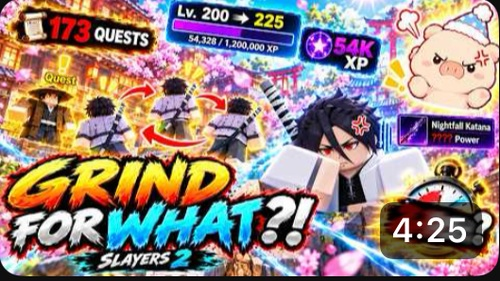
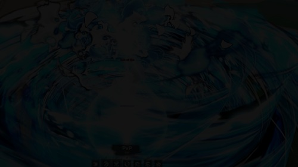

Darren Zhang
I am Darren Zhang, a Pre-Business student at the University of California, Riverside, with an expected graduation year of 2030. My interests bring together business, technology, gaming, and creative work. I enjoy exploring how a personal interest can become something that other people want to watch, use, or learn about. Through gaming videos, a team project at BETA Camp, and an internship in marketing and sales, I am beginning to connect those interests with practical experience. This portfolio introduces the work I have done so far and the areas I want to continue developing as a student.
Since September 2026, I have been creating YouTube gaming videos focused on Roblox anime games. Gaming is a personal interest, and making videos gives me a way to share that interest in a creative format. My content focuses on the games and experiences that I enjoy, rather than trying to cover every type of gaming. The examples in my portfolio show some of the subjects featured in my videos. I see content creation as a place where entertainment and business can meet: a creator has something to share, while viewers choose what interests them. That connection is one reason I am interested in both media and marketing.
In 2023, I attended BETA Camp and led a team to build a minimum viable product, or MVP. This experience gave me an opportunity to take part in a business-oriented project with other people. Our work centered on building an initial version of a product rather than leaving an idea only as a concept. Being the team leader was an important part of that experience for me. It also connects with my current interest in entrepreneurship and the process of turning an idea into something concrete. I want to keep developing my ability to contribute to a team while taking responsibility for my own role.
In 2026, I worked as an intern at Promostock USA, where I was responsible for marketing and sales. This role brought my interest in business into a workplace setting. Marketing and sales are areas I want to understand more deeply as I continue my education. I am interested in how businesses explain what they offer and how they connect with people who may be interested in their products. My internship, my team experience, and my content creation are different activities, but each gives me a starting point for thinking about communication and business.
At UCR, I am continuing to build my academic foundation while exploring the relationship between business and technology. Web development is another area of interest, and this resume website is part of that learning process. Looking toward graduation in 2030, I want to keep learning through coursework and practical projects. My portfolio reflects an early stage in that journey: a combination of creative interests, leadership experience, and exposure to marketing and sales. I look forward to developing these interests further and adding new work as my experience grows.
Shortcuts: UCR · My GitHub profile · LearnCS8 · Portfolio.
Experience
Gaming Content Creator
• Create gaming videos focused on Roblox anime games.
• Share gameplay through video content.
• Feature selected gaming videos in the portfolio below.
Marketing and Sales Intern
• Responsible for marketing and sales during an internship.
• Gained workplace experience in business.
Team Leader
• Led a team to build a minimum viable product (MVP).
• Participated in a collaborative product-building project.
Education
University of California, Riverside
Undergraduate student
Interests: business, marketing, technology, and web development.
Portfolio
Selected thumbnails from my Roblox anime gaming videos and a gameplay screenshot.

